gmgcsa24-01 · FN
Falling (LS) on the bed from sitting on the bed then falling (RS) to the floor.mp4
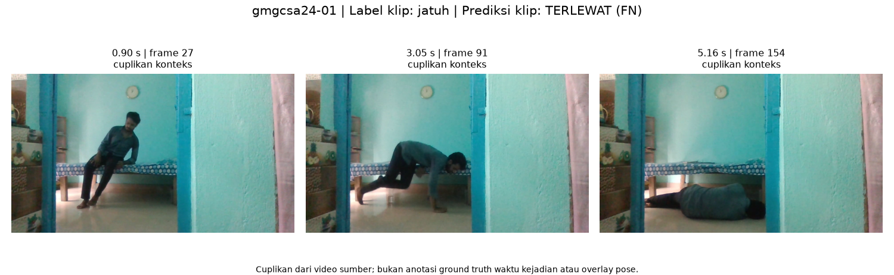
Model baru dievaluasi pada video GMGCSA24 dan video asli yang sama dengan baseline lama.
README GitHub · SLICE CSV · Status metadata · OOF training model baru
5/6 video terdeteksi · recall 83.33% · F1 90.91%
Precision 100.00%; negatif n=0, alarm palsu belum terukur.
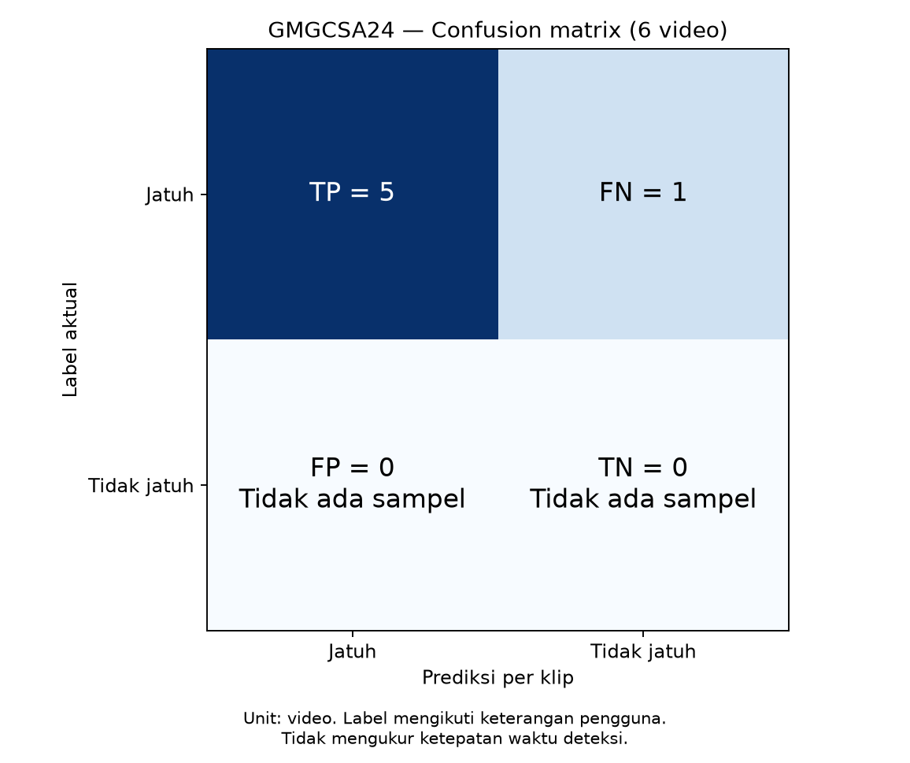
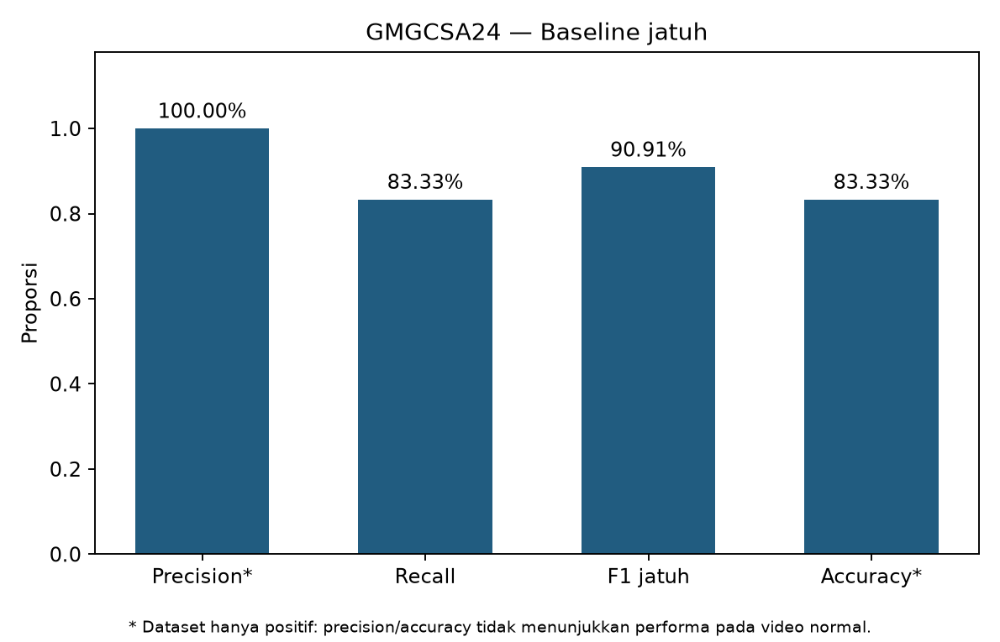
CSV per video · Evidence · Log
Falling (LS) on the bed from sitting on the bed then falling (RS) to the floor.mp4

Falling (RS) on the bed from sitting on the bed.mp4
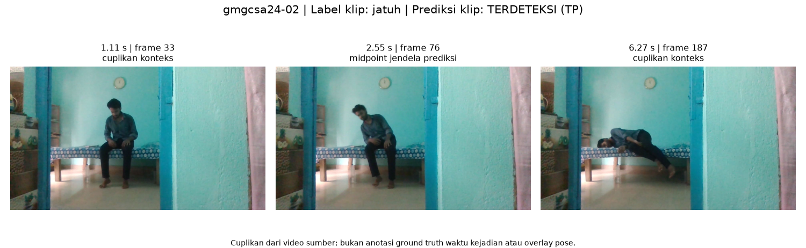
Falling from sitting on the chair to the ground. Left side Fall. Full body not visible.mp4
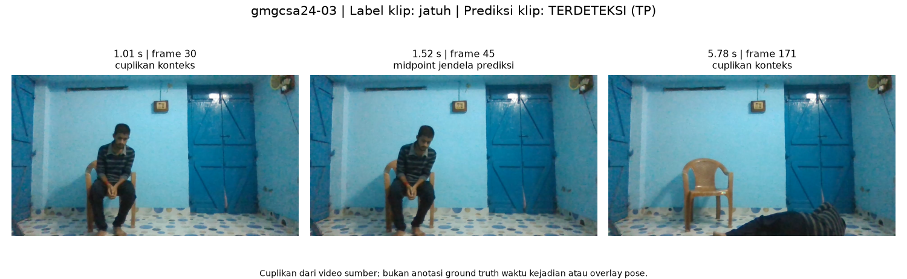
Standing then falling sideways.mp4
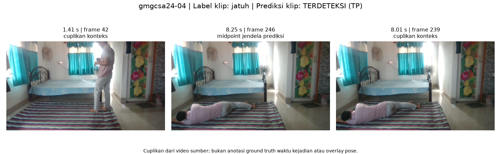
Walking then falling (LS) on the floor.mp4
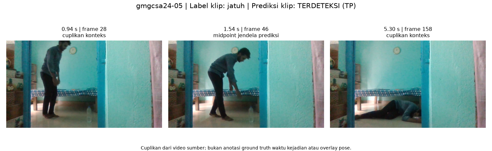
Walking to falling. Right side fall.mp4
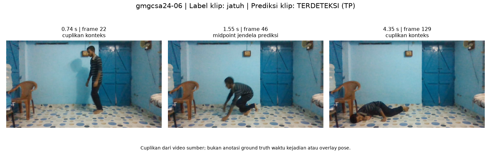
3/4 video terdeteksi · recall 75.00% · F1 85.71%
Precision 100.00%; negatif n=0, alarm palsu belum terukur.
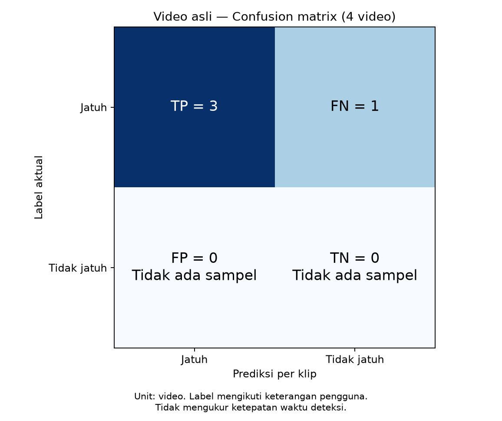
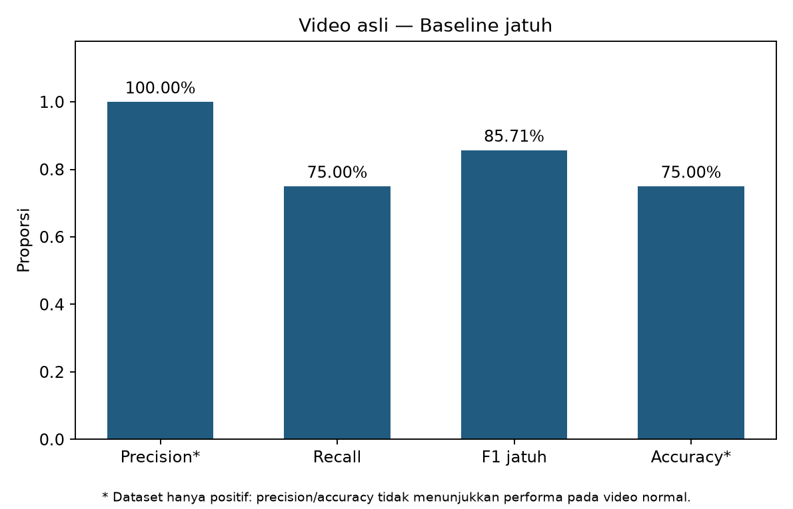
CSV per video · Evidence · Log
fall.mp4
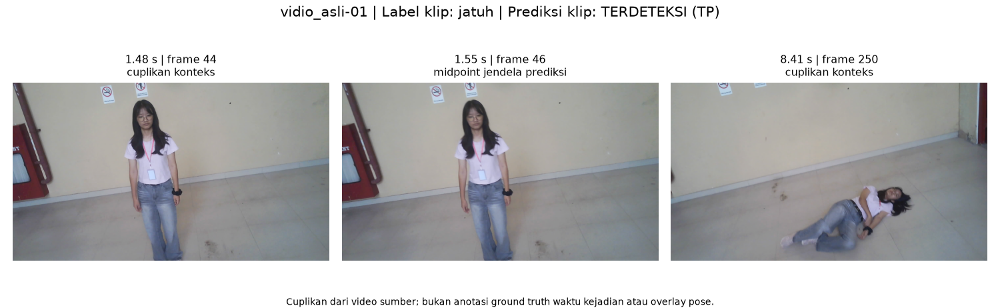
fall1.mp4
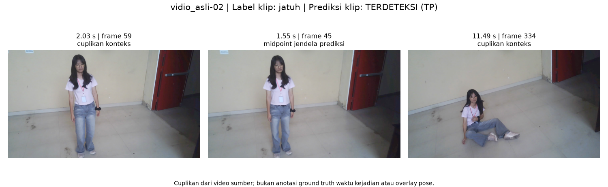
fall2.mp4
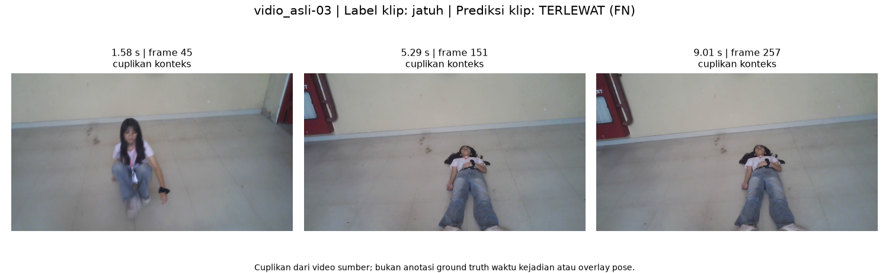
fall3.mp4
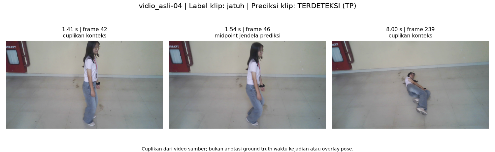
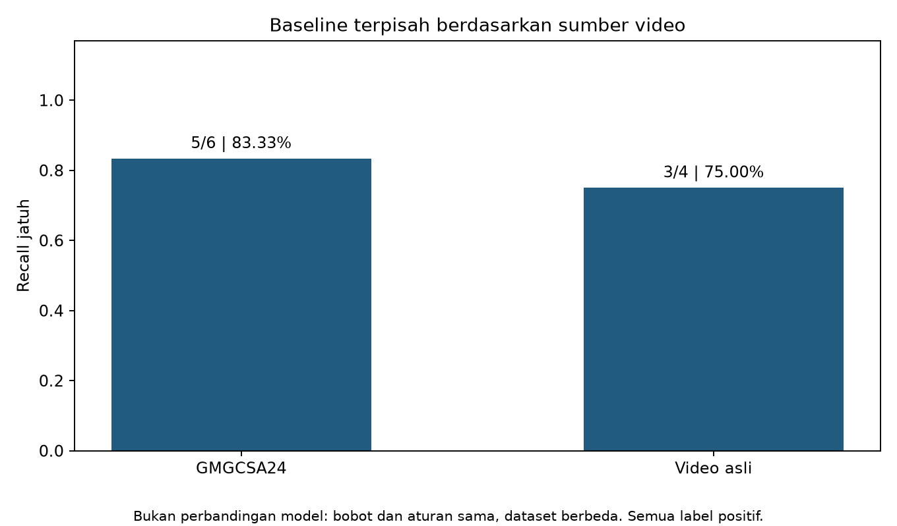
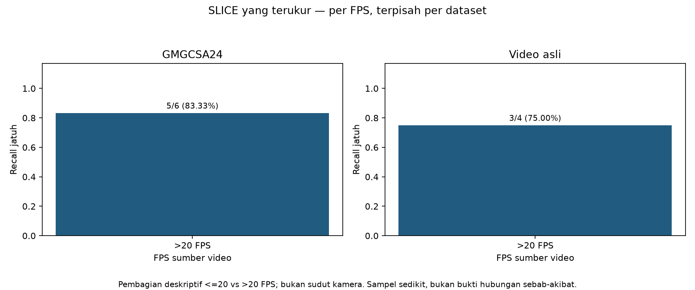
Confusion matrix OOF training tersedia. Yaw/pitch dan performer belum tersedia karena metadata per sampel tidak disertakan; hipotesis sudut ekstrem belum dapat dibuktikan.